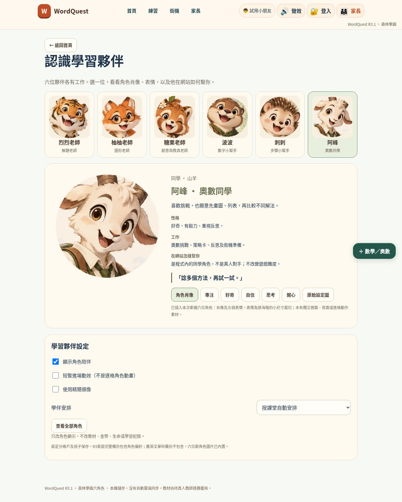
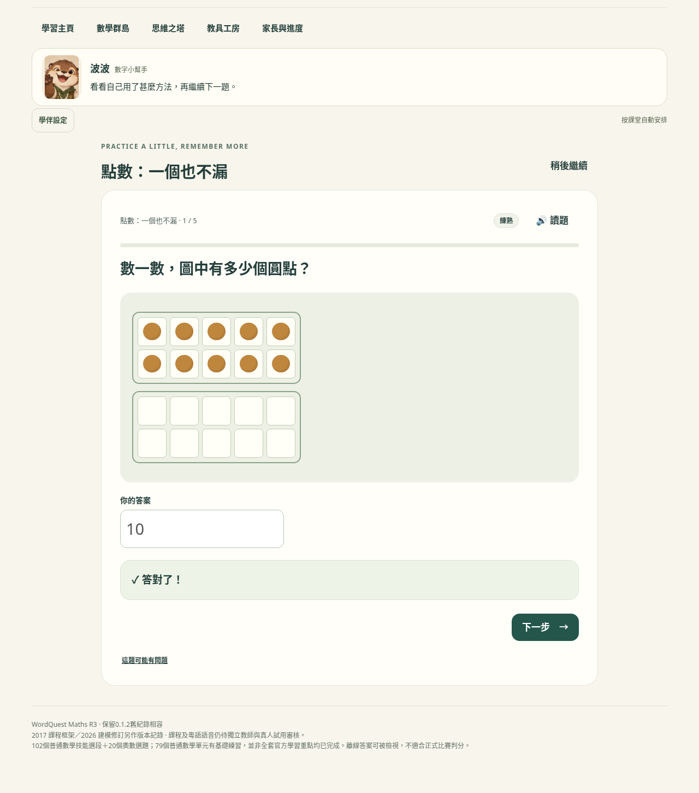

WORDQUEST R3.1 / CHARACTER INTEGRATION
角色不再只在海報裏。
六個肖像、30個表情裁切，已接入英文與數學介面、教具及街機陪伴。六張原PNG完整保留；另有六個內嵌海報預覽，共42個程式圖像資源。
 烈烈老師解題老師
烈烈老師解題老師 柚柚老師圖形老師
柚柚老師圖形老師 糖栗老師創意與教具老師
糖栗老師創意與教具老師 波波數字小幫手
波波數字小幫手 刺刺步驟小幫手
刺刺步驟小幫手 阿峰奧數同學
阿峰奧數同學分工與顯示
答錯或使用提示時由刺刺陪伴；進入教具探索由糖栗老師帶路。固定學伴只更換陪伴角色，不改題目回饋。高小及作答時自動精簡；模擬卷與獨立測試收起角色和設定入口。
本輪實際畫面

實際Chromium畫面；不是獨立設計稿。
原有題目、回饋與角色區共存；角色不另行判分。資料與操作
角色設定沿用帳戶、孩子及正式／測試區的原有儲存位置。新增可選guide欄位，舊記錄未有此欄位時自動安排。家庭完整備份匯出、還原及孩子切換已加入驗證；原有題庫、判分核心及街機引擎的來源碼雜湊保持一致。
切換角色、隱藏或精簡只重繪學伴區，不重繪題目。實測保留未提交答案與焦點、不改數學狀態或金幣；保存失敗時顯示只在本次有效，不冒充已保存。
實際測試結果
另有41個JavaScript語法檢查通過（40段內嵌程式＋服務工作程序）。本輪沒有把原R3的3,660次獨立答案驗算當作重新執行；本次題目操作檢查屬於回歸驗證。檢查數目不代表品質分數、學習成效或零漏洞。
驗收界線：實際Chromium點擊、鍵盤、選單和檔案下載有執行，但原生file導覽被環境以ERR_BLOCKED_BY_ADMINISTRATOR阻擋。測試使用明示儲存、跨分頁鎖、密碼運算及家庭媒體I/O替身；不代表原生重開保存、Safari、手機真機或Windows啟動器已通過。
第一次嘗試與修正紀錄
曾同時啟動三個Chromium檢查流程，遇到頁面崩潰，原因未證實；改為逐套執行後完成全套。另有兩項測試器問題：隱藏測試錯把不可見的快取圖片節點當成失敗；獨立作答測試的定位器同時找到兩個入口。分別改以實際可見性及指定第一個入口檢查。這些沒有冒充成原程式漏洞或刪去初次紀錄。
仍需另外完成
角色素材還欠獨立側面、背面、逐格走跑跳／發球動作；小表情是約80像素寬的海報裁切，適合頭像，不是假裝成高清全身動畫。新六角色已接入街機大堂、規則及暫停陪伴，但未取代街機內的全部玩家動畫。完整官方課程、教師審核、真人語音和OCR模型等R3其餘範圍未在本輪擴充。
概念海報的字句和數學示意不作教材或標準答案。角色的姓名、工作及教學內容以程式文字、題庫及正式教具為準。
重現及查閱
本輪摘要 · 核心與原圖校驗 · 環境及限制 · 全部素材 · 使用與開發說明
python tools/build_character_assets.py
python tools/build_characters_r31.py
python r31_tests/run_all.py
python r31_tests/child_and_exam.py
本輪測試程式使用合成測試帳戶和作答資料；未接觸使用者瀏覽器的真實學員紀錄。應用程式SHA-256：ceb911e9a7fc56e873093470d9a76bdcff585649095ad1ff69ac11b22bbdcf8f